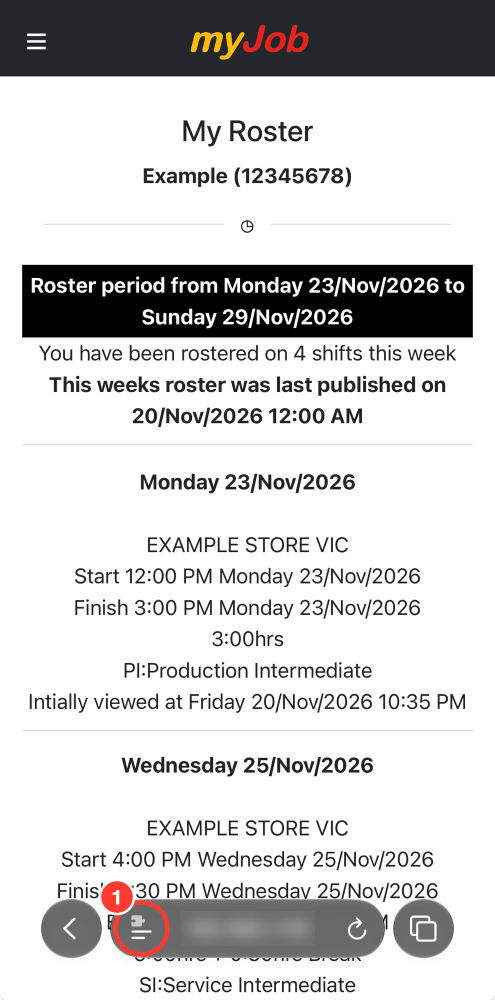
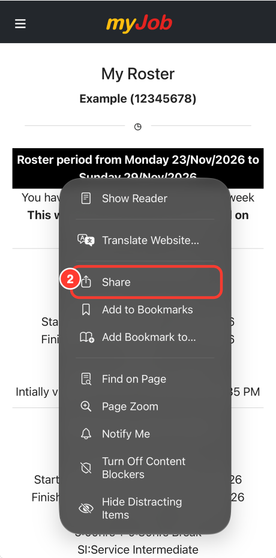
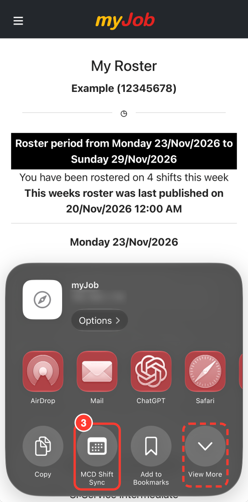
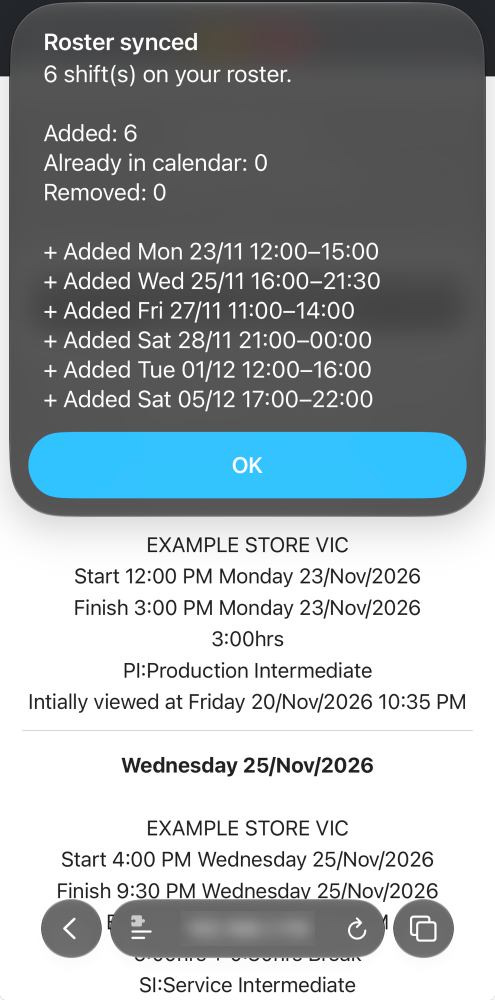
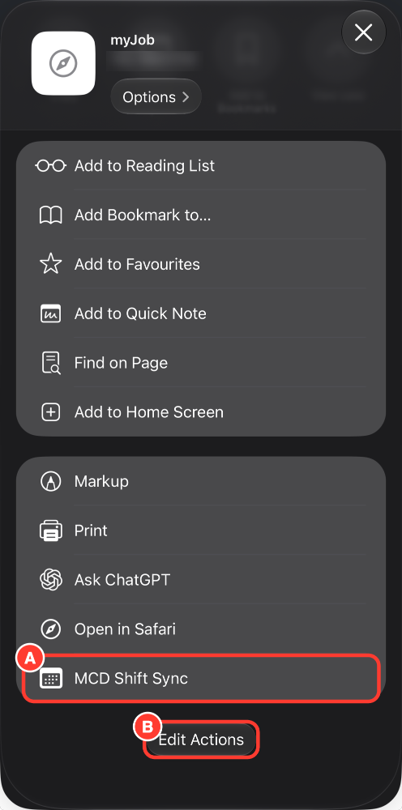
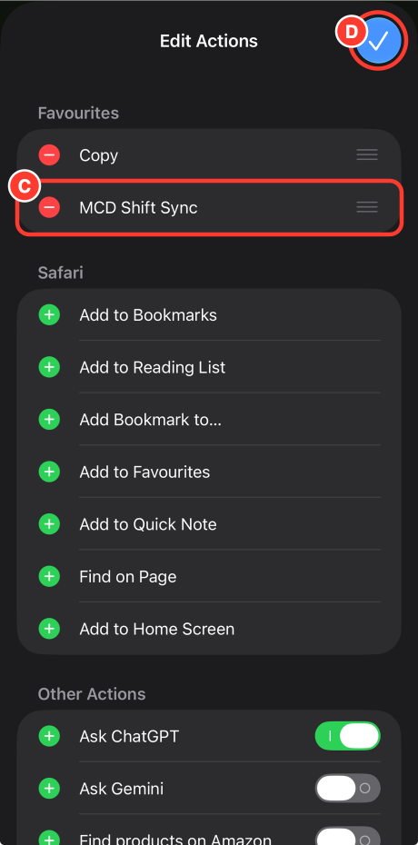
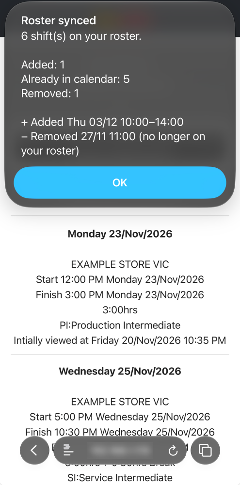
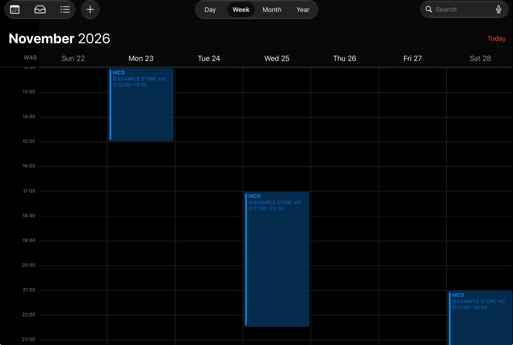

An iPhone shortcut for McDonald's Australia myJob rosters
Copies your roster from myJob into your iPhone calendar, and keeps it up to date. Run it from the Share menu on the My Roster page.
Each time you run it:
After tapping Add to iPhone and choosing a calendar:

1Open My Roster in Safari and tap the page menu button.
2Tap Share. Some iPhones show it on the toolbar.
3Tap MCD Shift Sync. If it's not there, see pinning.
4The first time, tap Always Allow. A summary appears.New shortcuts start at the bottom of View More. Pin it once to keep it in the first row.

Steps A and B
Steps C and DRun it again. Here, Wednesday moved later, Friday was cancelled and a Thursday shift was added:


The calendar after one run: Wednesday is now 17:00–22:30 and Friday is gone. The new Thursday shift is the following week.
Only Safari can pass the roster page to a shortcut. Chrome and other iPhone browsers only share the link, so log in to myJob in Safari.
Go to Settings → Apps → Shortcuts → Advanced and turn on Allow Running Scripts.
No. It only manages events titled “MCD” that have a shift ID in their notes, within the roster weeks on the page. Events added by the old Chrome extension are recognised, so nothing is duplicated.
It checks that the number of shifts it read matches what the roster says. If they don't match, it stops without changing your calendar. Reload the page and try again.
Everything happens on your iPhone. It reads the page you already have open and writes to your calendar. Nothing is sent anywhere, and your login isn't stored.
myJob may have changed its page. You'll see “Couldn't sync your roster” and your calendar won't be changed. Please report it on GitHub.